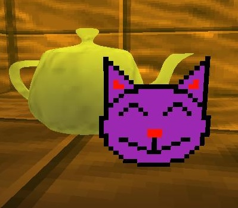

News
First tech demo released - 19/08/22
The first tech demo made in Worlds has been released, you can check it out in the main page, where it says Tech Demos. I have encountered with many bugs during the development of this tech demo, but it was worth it, I feel proud to have released my first tech demo, I never thought I would reach this goal.
But I still was motivated to continue working on it, and today is the day I release it, some frustrations over there, but overall I had fun making it. In the future, I hope to bring more tech demos to the public and also start making a real game with my game engine.
Thank you to anybody that has supported me from the beginning of my game engine development until now, I really appreciate it. I feel optimistic about the future of my game engine.
1 Year of WORLDS development - 20/05/22
It has been 1 year since I started the development of the WORLDS engine. I started to create my own game engine on May 20th, 2021, by a simple tutorial online on how to use OpenGL. Now I have made my very own sprite format, a work in progress map editor and a work in progress multiplayer mode.
Honestly, for being 1 person behind all of this is not actually that bad, at the time of writing this, I think I have achieved very little popularity, but I hope that changes in the future, maybe when I actually release something to the public.
I am in the middle between realistic and idealistic, I want to believe my game engine will receive prominent popularity around the internet, but at the same time, I don't think it's going to be the biggest hit ever, but I hope it's good enough to make me feel satisfied.
Thank you for whoever bothered reading this, if you want to support me, please consider donating me on Patreon, Ko-Fi or Liberapay, I would really appreciate it.
Here are the links:
WORLDS now available for Windows 95, sprites are now transparent and rotational - 16/04/22
It has been a long time since I haven't updated you with more news, that's because development has been a little bit slow, but recently there has been some progress on the engine.
I have made a Windows 95 port, which I thought it was going to be impossible because of some DLL errors, but I found the way to make a Windows 95 port, so now that means the Windows compatibility list has been expanded from Windows 95 to Windows 11 now.
Also, I have added proper sprites into the engine, now they are no longer opaque static sprites, they can look at you and can be transparent, sorta like how the sprites on Doom work.

And that's it! if you like what I do, consider supporting me on Patreon!
Merry Christmas! - 25/12/21
Hello Everybody, I want to wish you all a Merry Christmas,
I hope you are having a fantastic day, now I want to say that WORLDS Alpha 1.8 has been released!
if you are a $5 patron, you are able to download the build on my Patreon.
If you donate, not only you get private builds of WORLDS, you will also appear on
the credits list, and I will also feel thankful for you donating to me.
Back